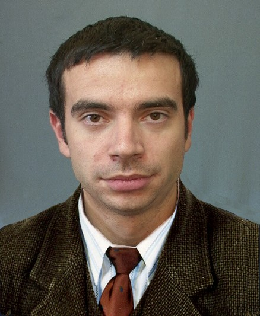

- 
-
HERLEA ION MARIUS
Age 44, single
-
Contact details
-
Email: mariusherlea@gmail.com
Tel: 0722 256 129
Address: Cugir, Principala 315, Alba -
About me
-
I did a lot of things from which I gained a lot of experience, but programming was always a passion and with a delay I decided to follow it.
-
Professional experience
-
- Apr 2016 - Nov 2019 Forklift operator – KUEHNE+NAGEL, Worktown: Sebes, Fields of activity: Logistics
- Mar 2014 - Feb 2015 Deputy Chief Shop – Billa, Worktown: Sebes, Fields of activity: Sales
- Feb 2013 - Aug 2013 Store chief – Profi, Worktown: Abrud, Fields of activity: Sales
- Aug 2012 - Aug 2013 Deputy Chief Shop – Penny Market, Worktown: Sebes, Fields of activity: Sales
- Feb 2010 - Aug 2011 Commercial worker – Kaufland, Worktown: Orastie, Fields of activity: Sales
- Mar 2000 - Oct 2008 Copy editor – 1 Decembrie 1918 University, Worktown: Alba Iulia, Fields of activity: Printing / Publishing
-
Education
-
- 2016 - prezent; Informatics - Bachelor's degree – 1 Decembrie 1918 University Alba Iulia
- 1998 - 2003; Economics - Bachelor's degree – 1 Decembrie 1918 University Alba Iulia
-
Trainings
-
Nov 2019 - March 2020; Pentalog's Java Remote Training Program.
https://github.com/speedy4all/pentastagiu-java-2019-2020/tree/mariusherlea
Remote I like the programming challenges received here. And what I have programmed so far is here: -
Personal project
- http://mherlea.000webhostapp.com/index.html
-
Foreign languages
-
English - Medium
-
Hobbies
-
Travel